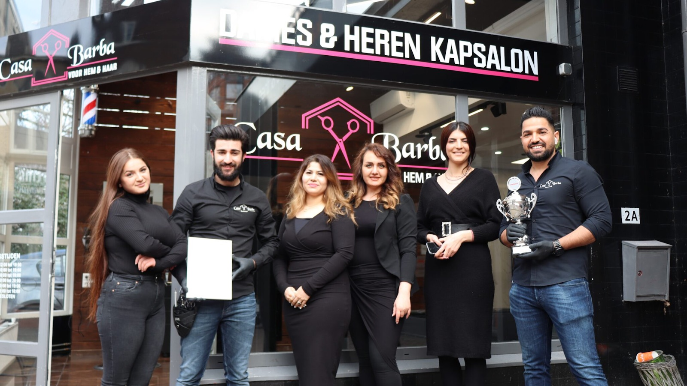
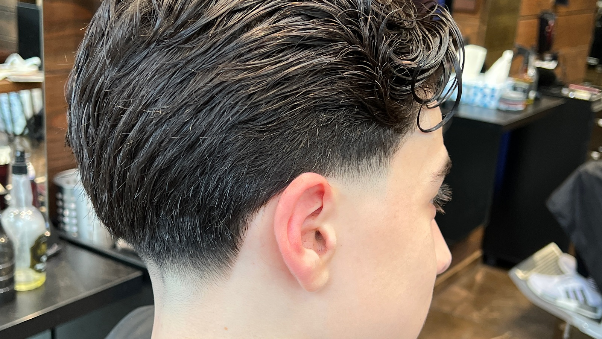
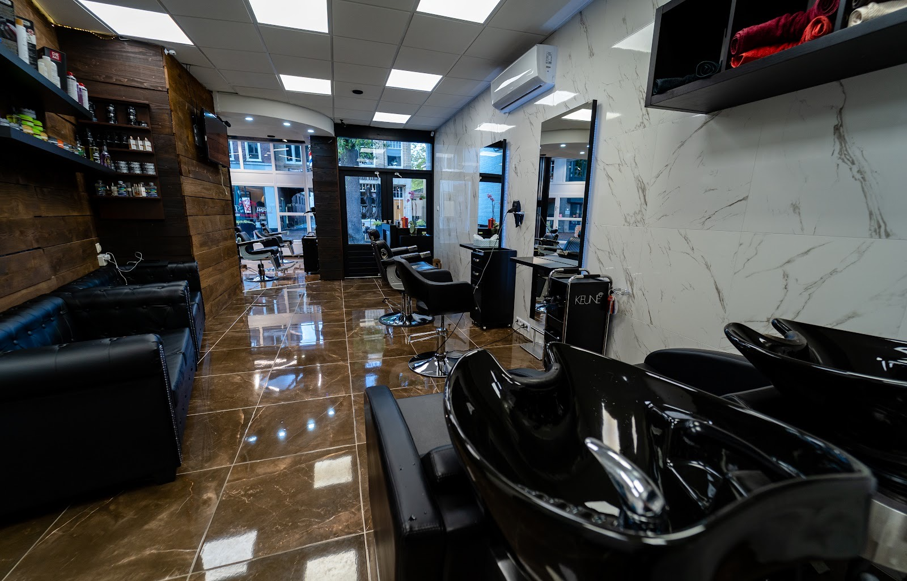
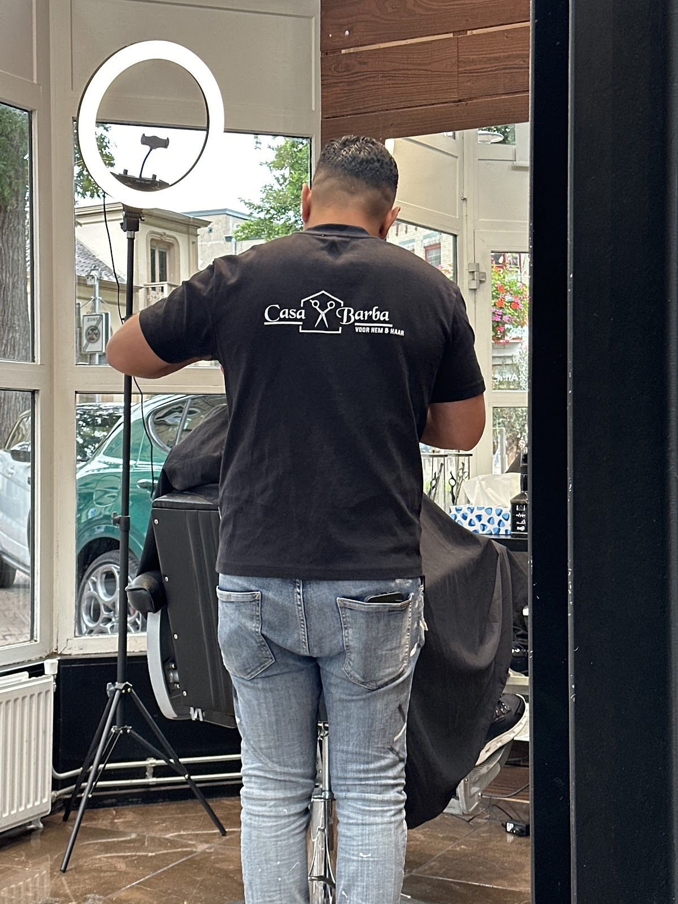
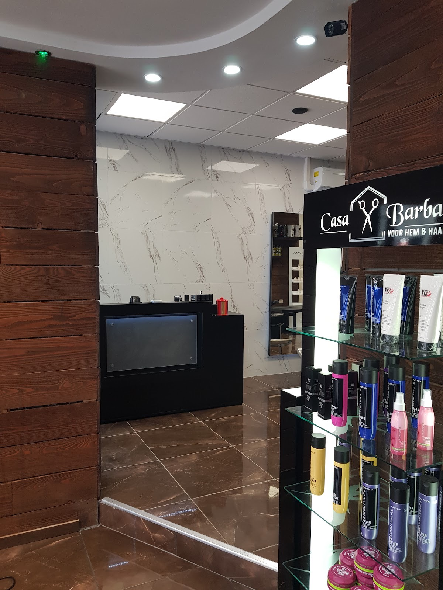
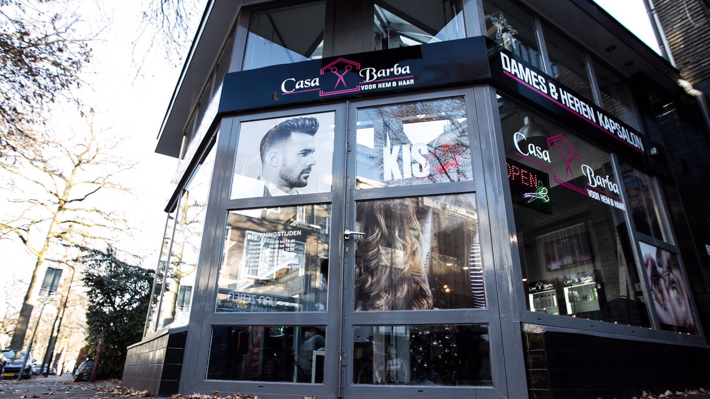

Dames & heren kapsalon
Voor hem & haar, op de hoek van de Paslaan in Apeldoorn. Knippen, fades en baard, zo strak als u het in gedachten had.


Zoals u het wilde
Neem een foto mee of leg uit wat u zoekt. Wij luisteren en nemen de tijd, tot de overgang klopt en de lijn strak staat.
“Fijn ontvangst en erg goed geholpen! Mijn mullet is uitstekend bijgewerkt en precies zoals ik wilde.”
“Mijn zoon is heel tevreden over zijn nieuwe kapsel. Het is exact plaatje zoals hij heeft laten zien en wat hij graag wilde.”
Hout, marmer en een warm welkom
Een salon waar u graag even zit. Gelakte vloer, houten wanden, wit marmer en ruime leren stoelen.



“De sfeer in de zaak is relaxed en je voelt je meteen welkom. Mijn kapsel en baard zijn netjes en professioneel gedaan.”
“Ik was daar voor de 1ste keer, maar de salon is netjes met zeer vriendelijke mensen.”
“De beste kapper waar ik in lange tijd ben geweest. Professioneel werk, oog voor detail en een ontzettend vriendelijke service. Echt topkwaliteit!”
Kom langs
Bel of mail voor een afspraak. U vindt ons op de hoek aan de Paslaan.
| Maandag | 12:00 – 18:00 |
| Dinsdag | 09:00 – 18:00 |
| Woensdag | 09:00 – 18:00 |
| Donderdag | 09:00 – 20:00 |
| Vrijdag | 09:00 – 18:00 |
| Zaterdag | 09:00 – 18:00 |
| Zondag | Gesloten |

- Afspraak maken
- 06 43058570 info@casabarba.nl